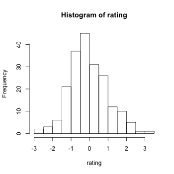
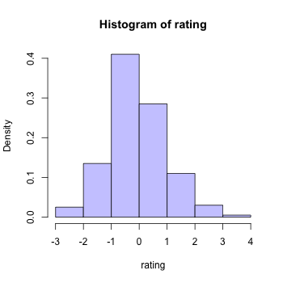
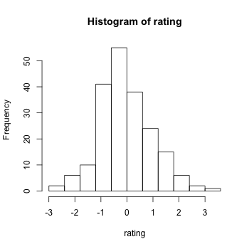
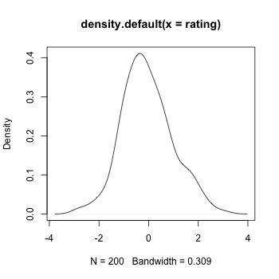
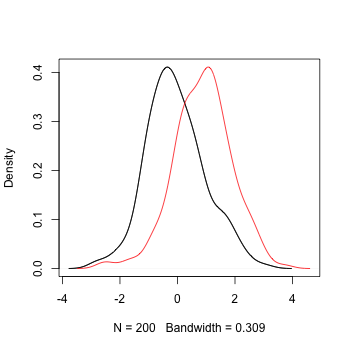
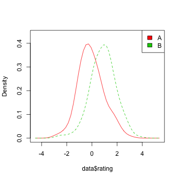

Histogram and density plot
Problem
You want to make a histogram or density plot.
Solution
Some sample data: these two vectors contain 200 data points each:
set.seed(1234) rating <- rnorm(200) # -1.207065749 0.277429242 ... 0.162654708 -2.078237542 rating2 <- rnorm(200, mean=.8) # 1.28522682 1.49676878 ... 0.81464312 -0.11648914
When plotting multiple groups of data, some graphing routines require a data frame with one column for the grouping variable and one for the measure variable.
# Make a column to indicate which group each value is in cond <- factor( rep(c("A","B"), each=200) ) data <- data.frame(cond, rating = c(rating,rating2)) # cond rating # A -1.2070657 # A 0.2774292 # A 1.0844412 # ... # B 1.3388331 # B 0.8146431 # B -0.1164891
# Histogram hist(rating) # Use 8 bins (this is only approximate - it places boundaries on nice round numbers) # Make it light blue #CCCCFF # Instead of showing count, make area sum to 1, (freq=FALSE) hist(rating, breaks=8, col="#CCCCFF", freq=FALSE) # Put breaks at every 0.6 boundaries <- seq(-3, 3.6, by=.6); # -3.0 -2.4 -1.8 -1.2 -0.6 0.0 0.6 1.2 1.8 2.4 3.0 3.6 hist(rating, breaks=boundaries) # Kernel density plot plot(density(rating))
   
Multiple groups with kernel density plots.
This code is from: http://onertipaday.blogspot.com/2007/09/plotting-two-or-more-overlapping.html
plot.multi.dens <- function(s) { junk.x = NULL junk.y = NULL for(i in 1:length(s)) { junk.x = c(junk.x, density(s[[i]])$x) junk.y = c(junk.y, density(s[[i]])$y) } xr <- range(junk.x) yr <- range(junk.y) plot(density(s[[1]]), xlim = xr, ylim = yr, main = "") for(i in 1:length(s)) { lines(density(s[[i]]), xlim = xr, ylim = yr, col = i) } } # the input of the following function MUST be a numeric list plot.multi.dens( list(rating, rating2))

The sm package also includes a way of doing multiple density plots. The data must be in a data frame.
library(sm) sm.density.compare(data$rating, data$cond) # Add a legend (the color numbers start from 2 and go up) legend("topright", levels(data$cond), fill=2+(0:nlevels(data$cond)))
